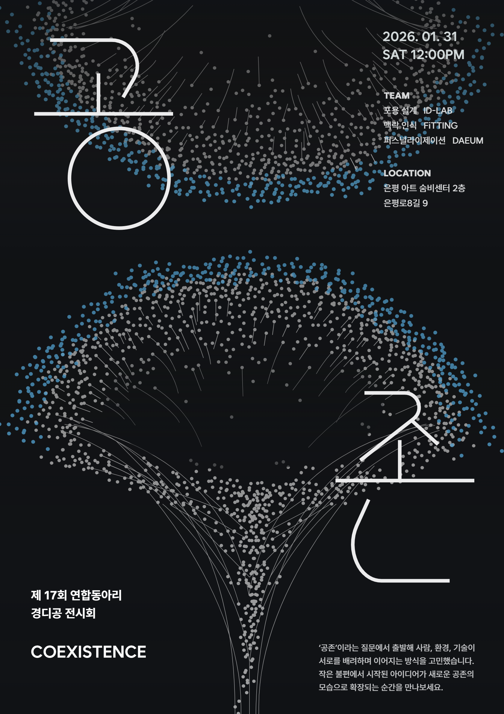
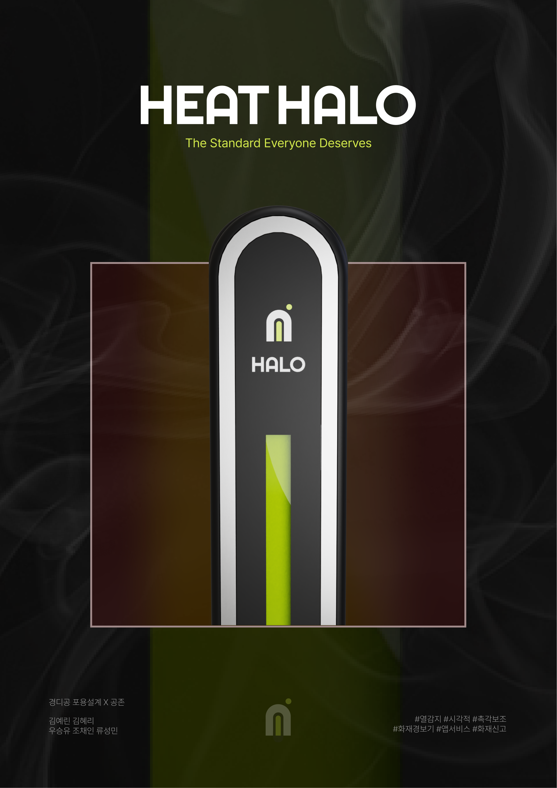
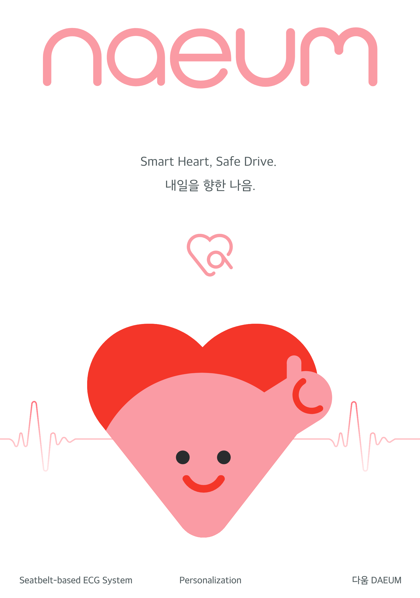

2026.01.31

2026.01.31 진행된 제 17회 경디공 전시회 '공존' 포스터입니다.
'공존'이라는 질문에서 출발해 사람, 환경, 기술이 서로를 배려하며 이어지는 방식을 고민했습니다.
작은 불편에서 시작된 아이디어가 새로운 공존의 모습으로 확장되는 순간을 만나보세요.

2026.01.31 '포용설계'를 주제로 한 'ID-LAB'팀의 HEAT HALO 입니다.
'포용설계'의 핵심은 누구에게도 예외가 발생하지 않는 환경을 구성하는 것입니다.
화재 상황을 눈으로 인지하도록 하는 화재 대응 보조 장치입니다.

2026.01.31 '퍼스널라이제이션'를 주제로 한 '다움'팀의 naeum 입니다.
'퍼스널라이제이션'의 핵심은 개인의 신체와 행동 맥락을 이해해하는 것입니다.
심혈관계 질환자를 위한 안전벨트형 차량용 ECG 센서 서비스입니다.